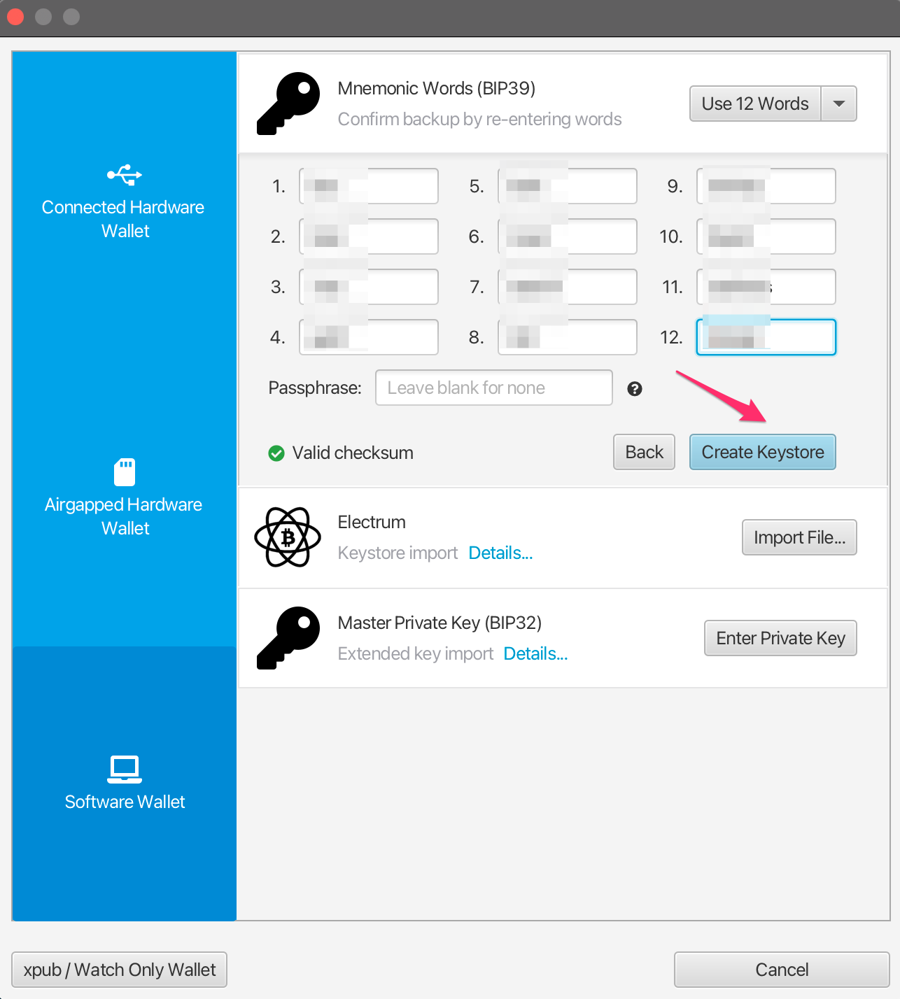
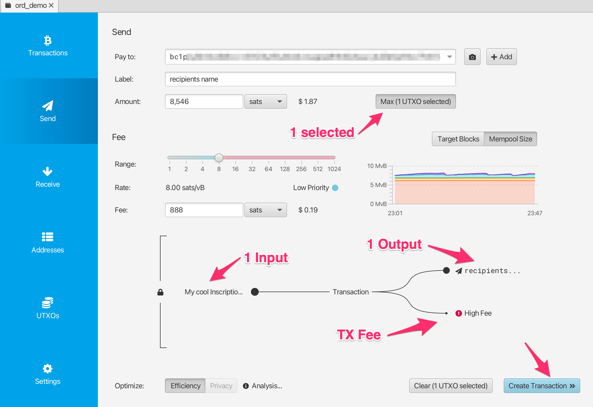

Вступление
This handbook is a guide to ordinal theory. Ordinal theory concerns itself with gros, giving them individual identities and allowing them to be tracked, transferred, and imbued with meaning.
Gros, not groestlcoin, are the atomic, native currency of the Groestlcoin network. One groestlcoin can be sub-divided into 100,000,000 gros, but no further.
Ordinal theory does not require a sidechain or token aside from Groestlcoin, and can be used without any changes to the Groestlcoin network. It works right now.
Ordinal theory imbues gros with numismatic value, allowing them to be collected and traded as curios.
Individual gros can be inscribed with arbitrary content, creating unique Groestlcoin-native digital artifacts that can be held in Groestlcoin wallets and transferred using Groestlcoin transactions. Inscriptions are as durable, immutable, secure, and decentralized as Groestlcoin itself.
Возможны и другие, более необычные варианты использования: colored-coins вне блокчейна, инфраструктура открытых ключей с ротацией ключей, децентрализованная замена для DNS. Однако пока такие варианты использования являются умозрительными и существуют только в головах сторонних ordinal теоритиков.
Подробнее о порядковой теории смотрите в Обзор Ordinal theory.
Подробнее об inscriptions смотрите в разделе inscriptions.
Если вы готовы замарать руки, то начать стоит с [надписей] (guides/inscriptions.md) - любопытного вида цифровых артефактов, созданных на основе ordinal theory.
Ссылки
Обзор Ordinal Theory
Ordinals are a numbering scheme for gros that allows tracking and transferring individual gros. These numbers are called ordinal numbers. Gros are numbered in the order in which they're mined, and transferred from transaction inputs to transaction outputs first-in-first-out. Both the numbering scheme and the transfer scheme rely on order, the numbering scheme on the order in which gros are mined, and the transfer scheme on the order of transaction inputs and outputs. Thus the name, ordinals.
Technical details are available in the BIP.
Ordinal theory does not require a separate token, another blockchain, or any changes to Groestlcoin. It works right now.
Ordinal numbers имеют несколько различных представлений:
-
Integer notation:
2099994106992659The ordinal number, assigned according to the order in which the gro was mined. -
Decimal notation:
3891094.16797The first number is the block height in which the gro was mined, the second the offset of the gro within the block. -
Degree notation:
3°111094′214″16797‴. We'll get to that in a moment. -
Percentile notation:
99.99971949060254%. The gro's position in Groestlcoin's supply, expressed as a percentage. -
Name:
satoshi. An encoding of the ordinal number using the charactersathroughz.
Arbitrary assets, such as NFTs, security tokens, accounts, or stablecoins can be attached to gros using ordinal numbers as stable identifiers.
Ordinals is an open-source project, developed on GitHub. The project consists of a BIP describing the ordinal scheme, an index that communicates with a Groestlcoin Core node to track the location of all gros, a wallet that allows making ordinal-aware transactions, a block explorer for interactive exploration of the blockchain, functionality for inscribing gros with digital artifacts, and this manual.
Редкость
Humans are collectors, and since gros can now be tracked and transferred, people will naturally want to collect them. Ordinal theorists can decide for themselves which gros are rare and desirable, but there are some hints…
Groestlcoin has periodic events, some frequent, some more uncommon, and these naturally lend themselves to a system of rarity. These periodic events are:
-
Blocks: A new block is mined approximately every 1 minute, from now until the end of time.
-
Difficulty adjustments: Every 2016 blocks, or approximately every 1.5 days, the Groestlcoin network responds to changes in hashrate by adjusting the difficulty target which blocks must meet in order to be accepted.
-
Halvings: Every 1,050,000 blocks.
-
Cycles: Every 6 * 1,050,000 blocks.
Таким образом, мы получаем следующие уровни редкости:
common: Any gro that is not the first gro of its blockuncommon: The first gro of each blockrare: The first gro of each difficulty adjustment periodepic: The first gro of each halving epochlegendary: The first gro of each cyclemythic: The first gro of the genesis block
Which brings us to degree notation, which unambiguously represents an ordinal number in a way that makes the rarity of a gro easy to see at a glance:
A°B′C″D‴
│ │ │ ╰─ Index of gro in the block
│ │ ╰─── Index of block in difficulty adjustment period
│ ╰───── Index of block in halving epoch
╰─────── Cycle, numbered starting from 0
Ordinal теоретики часто используют термины "час", "минута", "секунда" и "треть" для обозначения A, B, C, и D, соответственно.
Now for some examples. This gro is common:
1°1′1″1‴
│ │ │ ╰─ Not first gro in block
│ │ ╰─── Not first block in difficulty adjustment period
│ ╰───── Not first block in halving epoch
╰─────── Second cycle
This gro is uncommon:
1°1′1″0‴
│ │ │ ╰─ First gro in block
│ │ ╰─── Not first block in difficulty adjustment period
│ ╰───── Not first block in halving epoch
╰─────── Second cycle
This gro is rare:
1°1′0″0‴
│ │ │ ╰─ First gro in block
│ │ ╰─── First block in difficulty adjustment period
│ ╰───── Not the first block in halving epoch
╰─────── Second cycle
This gro is epic:
1°0′1″0‴
│ │ │ ╰─ First gro in block
│ │ ╰─── Not first block in difficulty adjustment period
│ ╰───── First block in halving epoch
╰─────── Second cycle
This gro is legendary:
1°0′0″0‴
│ │ │ ╰─ First gro in block
│ │ ╰─── First block in difficulty adjustment period
│ ╰───── First block in halving epoch
╰─────── Second cycle
And this gro is mythic:
0°0′0″0‴
│ │ │ ╰─ First gro in block
│ │ ╰─── First block in difficulty adjustment period
│ ╰───── First block in halving epoch
╰─────── First cycle
If the block offset is zero, it may be omitted. This is the uncommon gro from above:
1°1′1″
│ │ ╰─ Not first block in difficulty adjustment period
│ ╰─── Not first block in halving epoch
╰───── Second cycle
Rare Gro Supply
Общее количество
common: 10.4 quadrillionuncommon: 6,929,999rare: 3437epic: 32legendary: 5mythic: 1
Текущее количество
common: 8.3 quadrillionuncommon: 745,855rare: 369epic: 3legendary: 0mythic: 1
At the moment, even uncommon gros are quite rare. As of this writing, 745,855 uncommon gros have been mined - one per 25.6 groestlcoin in circulation.
Названия
Each gro has a name, consisting of the letters A through Z, that get shorter the further into the future the gro was mined. They could start short and get longer, but then all the good, short names would be trapped in the unspendable genesis block.
As an example, 1905530482684727°'s name is "iaiufjszmoba". The name of the last gro to be mined is "a". Every combination of 10 characters or less is out there, or will be out there, someday.
Экзотика
Gros may be prized for reasons other than their name or rarity. This might be due to a quality of the number itself, like having an integer square or cube root. Or it might be due to a connection to a historical event, such as gros from block 1,439,424, the block in which SegWit activated, or 10499999999999999°, the last gro that will ever be mined.
Such gros are termed "exotic". Which gros are exotic and what makes them so is subjective. Ordinal theorists are encouraged to seek out exotics based on criteria of their own devising.
Надписи
Gros can be inscribed with arbitrary content, creating Groestlcoin-native digital artifacts. Inscribing is done by sending the gro to be inscribed in a transaction that reveals the inscription content on-chain. This content is then inextricably linked to that gro, turning it into an immutable digital artifact that can be tracked, transferred, hoarded, bought, sold, lost, and rediscovered.
Археология
Whether or not ordinals are of interest to NFT archaeologists is an open question! Ordinals were in fact created by Gruve-P in 2014 when he mined the Groestlcoin genesis block. In this sense, ordinals, and especially early ordinals, are certainly of historical interest.
Цифровые артефакты
Представьте себе физический артефакт. Редкая монета, скажем, хранившаяся несметное количество лет в темных тайниках клада викингов, а теперь выкопанная из земли вашими цепкими руками. Она…
...имеет владельца. Вы. Пока вы храните его в безопасности, никто не может его у вас отнять.
...завершен. В нем нет недостающих частей.
...может быть изменен только вами. Если бы вы были торговцем и попали в Китай XVIII века, никто, кроме вас, не смог бы поставить на нем свой знак.
...может быть отчужден только вами. Продать, обменять или подарить - это ваше право, кому бы вы ни пожелали.
Что такое цифровые артефакты? Проще говоря, это цифровой эквивалент физических артефактов.
Чтобы цифровая вещь стала цифровым артефактом, она должна быть похожа на вашу монету:
-
У цифровых артефактов могут быть владельцы. Число не является цифровым артефактом, поскольку никто не может им владеть.
-
Цифровые артефакты полностью готовы. NFT, указывающий на содержимое вне цепочки на IPFS или Arweave, является неполным, а значит, не является цифровым артефактом.
-
Цифровые артефакты не имеют разрешений. NFT, который нельзя продать без оплаты роялти, не является безразрешительным, а значит, не является цифровым артефактом.
-
Цифровые артефакты не поддаются цензуре. Возможно, вы можете изменить запись в базе данных централизованном Ledger сегодня, но, возможно, не сможете завтра, и поэтому она не может быть цифровым артефактом.
-
Цифровые артефакты неизменяемы. NFT с ключом обновления не является цифровым артефактом.
Определение цифрового артефакта призвано отразить то, чем NFT должны быть, иногда являются, и то, чем надписи всегда являются по своей природе.
Надписи
Inscriptions inscribe gros with arbitrary content, creating groestlcoin-native digital artifacts, more commonly known as NFTs. Inscriptions do not require a sidechain or separate token.
These inscribed gros can then be transferred using groestlcoin transactions, sent to groestlcoin addresses, and held in groestlcoin UTXOs. These transactions, addresses, and UTXOs are normal groestlcoin transactions, addresses, and UTXOS in all respects, with the exception that in order to send individual gros, transactions must control the order and value of inputs and outputs according to ordinal theory.
Модель содержания надписей соответствует модели содержания web. Надпись состоит из типа содержимого, известного также как тип-MIME, и самого содержимого, которое представляет собой байтовую строку. Это позволяет возвращать содержимое надписи с веб-сервера, а также создавать HTML-надписи, использующие и переделывающие содержимое других надписей.
Содержимое надписей полностью находится on-chain и хранится в скриптах taproot script-path spend. Скрипты taproot имеют очень мало ограничений на содержимое и дополнительно получают скидку свидетеля, что делает хранение содержимого надписей относительно экономичным.
Поскольку траты taproot script-path spend могут осуществляться только из существующих выходов taproot, надписи делаются с помощью двухфазной процедуры commit/reveal. Во-первых, в транзакции commit создается выход taproot, фиксирующий скрипт, содержащий содержимое надписи. Во-вторых, в транзакции reveal созданный транзакцией commit выход расходуется, раскрывая содержимое on-chain надписи.
Сериализация содержимого надписи осуществляется с помощью data pushes внутри неисполняемых условий, называемых "конвертами". Конверты состоят из OP_FALSE OP_IF … OP_ENDIF обертывающих любое количество data pushes. Поскольку конверты являются фактически no-ops, они не изменяют семантику скрипта, в который включены, и могут быть объединены с любым другим блокирующим скриптом.
Текстовая надпись, содержащая строку "Hello, world!" сериализуется следующим образом:
OP_FALSE
OP_IF
OP_PUSH "ord"
OP_PUSH 1
OP_PUSH "text/plain;charset=utf-8"
OP_PUSH 0
OP_PUSH "Hello, world!"
OP_ENDIF
Сначала вводится строка ord, чтобы отделить надписи от других видов использования конвертов.
OP_PUSH 1 указывает, что следующий push содержит тип содержимого, а OP_PUSH 0 - что последующие push-файлы содержат само содержимое. Для больших надписей необходимо использовать несколько push данных, так как одно из немногих ограничений taproot заключается в том, что размер отдельных push данных не может превышать 520 байт.
The inscription content is contained within the input of a reveal transaction, and the inscription is made on the first gro of its input. This gro can then be tracked using the familiar rules of ordinal theory, allowing it to be transferred, bought, sold, lost to fees, and recovered.
Содержимое
Модель данных надписей представляет собой HTTP-ответ, что позволяет обслуживать содержимое надписей на веб-сервере и просматривать его в браузере.
Поля
Надписи могут включать поля перед необязательным текстом. Каждое поле состоит из двух push данных - тега и значения.
В настоящее время единственным определяемым полем является content-type, с тегом 1, значением которого является тип-MIME текста.
Начало основного текста и конец полей обозначаются пустым вводом данных.
Нераспознанные метки интерпретируются по-разному в зависимости от того, четные они или нечетные, в соответствии с правилом "нормально быть нечетным", используемым в Lightning Network.
Четные метки используются для полей, которые могут повлиять на создание, первичное присвоение или перенос надписи. Таким образом, надписи с нераспознанными четными полями должны отображаться как "несвязанные", т.е. без указания местоположения.
Нечетные теги используются для полей, которые не влияют на создание, первоначальное назначение или передачу, например, дополнительные метаданные, и поэтому их можно игнорировать.
ID надписей
Надписи содержатся во входах транзакции раскрытия. Для их однозначной идентификации им присваивается ID вида:
521f8eccffa4c41a3a7728dd012ea5a4a02feed81f41159231251ecf1e5c79dai0
Часть перед i - это ID транзакции (txid) транзакции раскрытия. Число после i определяет индекс (начиная с 0) новых надписей, заносимых в транзакцию раскрытия.
Надписи могут располагаться либо в разных входах, либо в одном входе, либо в комбинации обоих вариантов. В любом случае порядок следования понятен, так как синтаксический анализатор будет последовательно просматривать входы и искать все надписи-"конверты".
| Вход | Inscription Count | Indices |
|---|---|---|
| 0 | 2 | i0, i1 |
| 1 | 1 | i2 |
| 2 | 3 | i3, i4, i5 |
| 3 | 0 | |
| 4 | 1 | i6 |
Песочница
Надписи HTML и SVG находятся в песочнице для предотвращения ссылок на off-chain содержимое, что позволяет сохранить неизменяемость и самодостаточность надписей.
Это достигается за счет загрузки HTML и SVG-надписей внутри iframe с атрибутом sandbox, а также предоставления содержимого надписей с заголовками Content-Security-Policy.
Metadata
Inscriptions may include CBOR metadata, stored as data pushes in fields with tag 5. Since data pushes are limited to 520 bytes, metadata longer than 520 bytes must be split into multiple tag 5 fields, which will then be concatenated before decoding.
Metadata is human readable, and all metadata will be displayed to the user with its inscription. Inscribers are encouraged to consider how metadata will be displayed, and make metadata concise and attractive.
Metadata is rendered to HTML for display as follows:
null,true,false, numbers, floats, and strings are rendered as plain text.- Byte strings are rendered as uppercase hexadecimal.
- Arrays are rendered as
<ul>tags, with every element wrapped in<li>tags. - Maps are rendered as
<dl>tags, with every key wrapped in<dt>tags, and every value wrapped in<dd>tags. - Tags are rendered as the tag , enclosed in a
<sup>tag, followed by the value.
CBOR is a complex spec with many different data types, and multiple ways of representing the same data. Exotic data types, such as tags, floats, and bignums, and encoding such as indefinite values, may fail to display correctly or at all. Contributions to ord to remedy this are welcome.
Пример
Since CBOR is not human readable, in these examples it is represented as JSON. Keep in mind that this is only for these examples, and JSON metadata will not be displayed correctly.
The metadata {"foo":"bar","baz":[null,true,false,0]} would be included in an inscription as:
OP_FALSE
OP_IF
...
OP_PUSH 0x05 OP_PUSH '{"foo":"bar","baz":[null,true,false,0]}'
...
OP_ENDIF
And rendered as:
<dl>
...
<dt>metadata</dt>
<dd>
<dl>
<dt>foo</dt>
<dd>bar</dd>
<dt>baz</dt>
<dd>
<ul>
<li>null</li>
<li>true</li>
<li>false</li>
<li>0</li>
</ul>
</dd>
</dl>
</dd>
...
</dl>
Metadata longer than 520 bytes must be split into multiple fields:
OP_FALSE
OP_IF
...
OP_PUSH 0x05 OP_PUSH '{"very":"long","metadata":'
OP_PUSH 0x05 OP_PUSH '"is","finally":"done"}'
...
OP_ENDIF
Which would then be concatinated into {"very":"long","metadata":"is","finally":"done"}.
Провенанс
Владелец надписи может создавать дочерние надписи, не сомневаясь в том, что эти дочерние on-chain надписи были созданы владельцем родительской надписи. Это может быть использовано для коллекций, когда дочерние надписи от родительской надписи являются членами одной коллекции.
Дети могут создавать дочерние элементы, что позволяет создавать комплексные иерархии. Например, художник может создать надпись, представляющую его самого, с вложенными надписями, представляющими созданные им коллекции, а дочерними элементами этих sub надписей являются предметы этих коллекций.
Описание
Чтобы создать child надпись C с parent надписью P:
- Создайте транзакцию надписи T, как обычно, для C.
- Проведите parent P по одному из входов T.
- Включите в C тег
3, т.е.OP_PUSH 3, со значением сериализованного двоичного ID надписи P, сериализованного как 32-байтовыйTXID, за которым следует четырехбайтовый little-endianINDEX, с опущенными задними нулями.
NB The bytes of a groestlcoin transaction ID are reversed in their text representation, so the serialized transaction ID will be in the opposite order.
Пример
Пример child надписи из 000102030405060708090a0b0c0d0e0f101112131415161718191a1b1c1d1e1fi0:
OP_FALSE
OP_IF
OP_PUSH "ord"
OP_PUSH 1
OP_PUSH "text/plain;charset=utf-8"
OP_PUSH 3
OP_PUSH 0x1f1e1d1c1b1a191817161514131211100f0e0d0c0b0a09080706050403020100
OP_PUSH 0
OP_PUSH "Hello, world!"
OP_ENDIF
Заметим, что значение метки 3 двоичное, а не шестнадцатеричное, и что для того, чтобы надпись была признана детской, 000102030405060708090a0b0c0d0e0f101112131415161718191a1b1c1d1e1fi0 должен быть потрачен как один из входов inscribe транзакции.
Пример кодировки ID надписи 000102030405060708090a0b0c0d0e0f101112131415161718191a1b1c1d1e1fi255:
OP_FALSE
OP_IF
…
OP_PUSH 3
OP_PUSH 0x1f1e1d1c1b1a191817161514131211100f0e0d0c0b0a09080706050403020100ff
…
OP_ENDIF
И ID надписи 000102030405060708090a0b0c0d0e0f101112131415161718191a1b1c1d1e1fi256:
OP_FALSE
OP_IF
…
OP_PUSH 3
OP_PUSH 0x1f1e1d1c1b1a191817161514131211100f0e0d0c0b0a090807060504030201000001
…
OP_ENDIF
Примечаниe
Метка 3 используется потому что это первая доступная нечетная метка. Нераспознанные нечетные метки не делают надпись несвязанной, поэтому дочерние надписи будут распознаваться и отслеживаться старыми версиями ord.
Коллекция может быть закрыта путем сжигания родительской надписи коллекции, что гарантирует, что больше ни один предмет коллекции не может быть выпущен.
Рекурсия
Важным исключением из песочницы является рекурсия: доступ к конечной точке ord's /content разрешен, что позволяет надписям получать доступ к содержимому других надписей, запрашивая /content/<INSCRIPTION_ID>.
Это имеет ряд интересных вариантов использования:
-
Ремикс содержания существующих надписей.
-
Публикация фрагментов кода, изображений, аудио или таблиц стилей в качестве общедоступных ресурсов.
-
Генеративные художественные коллекции, в которых алгоритм записан как JavaScript и инстанцирован из множества надписей с уникальными seeds.
-
Генеративные коллекции изображений профиля (PFP), в которых аксессуары и атрибуты вписываются в виде отдельных изображений или в общий атлас текстур, а затем комбинируются, в стиле коллажа, в уникальных сочетаниях в нескольких надписях.
Среди других конечных точек, к которым могут обращаться надписи, можно назвать следующие:
/blockheight: высота последнего блока./blockhash: хэш последнего блока./blockhash/<HEIGHT>: хэш блока при заданной высоте блока./blocktime: UNIX-метка времени последнего блока.
Pointer
In order to make an inscription on a sat other than the first of its input, a zero-based integer, called the "pointer", can be provided with tag 2, causing the inscription to be made on the sat at the given position in the outputs. If the pointer is equal to or greater than the number of total sats in the outputs of the inscribe transaction, it is ignored, and the inscription is made as usual. The value of the pointer field is a little endian integer, with trailing zeroes ignored.
An even tag is used, so that old versions of ord consider the inscription to be unbound, instead of assigning it, incorrectly, to the first sat.
This can be used to create multiple inscriptions in a single transaction on different sats, when otherwise they would be made on the same sat.
Examples
An inscription with pointer 255:
OP_FALSE
OP_IF
OP_PUSH "ord"
OP_PUSH 1
OP_PUSH "text/plain;charset=utf-8"
OP_PUSH 2
OP_PUSH 0xff
OP_PUSH 0
OP_PUSH "Hello, world!"
OP_ENDIF
An inscription with pointer 256:
OP_FALSE
OP_IF
OP_PUSH "ord"
OP_PUSH 1
OP_PUSH "text/plain;charset=utf-8"
OP_PUSH 2
OP_PUSH 0x0001
OP_PUSH 0
OP_PUSH "Hello, world!"
OP_ENDIF
An inscription with pointer 256, with trailing zeroes, which are ignored:
OP_FALSE
OP_IF
OP_PUSH "ord"
OP_PUSH 1
OP_PUSH "text/plain;charset=utf-8"
OP_PUSH 2
OP_PUSH 0x000100
OP_PUSH 0
OP_PUSH "Hello, world!"
OP_ENDIF
ЧАВО по Ordinals Theory
Что такое ordinal theory?
Ordinal theory is a protocol for assigning serial numbers to gros, the smallest subdivision of a groestlcoin, and tracking those gros as they are spent by transactions.
These serial numbers are large numbers, like this 804766073970493. Every gro, which is ¹⁄₁₀₀₀₀₀₀₀₀ of a groestlcoin, has an ordinal number.
Does ordinal theory require a side chain, a separate token, or changes to Groestlcoin?
Nope! Ordinal theory works right now, without a side chain, and the only token needed is groestlcoin itself.
Чем полезна ordinal theory?
Collecting, trading, and scheming. Ordinal theory assigns identities to individual gros, allowing them to be individually tracked and traded, as curios and for numismatic value.
Ordinal theory also enables inscriptions, a protocol for attaching arbitrary content to individual gros, turning them into groestlcoin-native digital artifacts.
Как работает ordinal theory?
Ordinal numbers are assigned to gros in the order in which they are mined. The first gro in the first block has ordinal number 0, the second has ordinal number 1, and the last gro of the first block has ordinal number 4,999,999,999.
Gros live in outputs, but transactions destroy outputs and create new ones, so ordinal theory uses an algorithm to determine how gros hop from the inputs of a transaction to its outputs.
К счастью, этот алгоритм очень прост.
Gros transfer in first-in-first-out order. Think of the inputs to a transaction as being a list of gros, and the outputs as a list of slots, waiting to receive a gro. To assign input gros to slots, go through each gro in the inputs in order, and assign each to the first available slot in the outputs.
Представим себе транзакцию с тремя входами и двумя выходами. Входы расположены слева от стрелки, а выходы - справа, все они помечены своими значениями:
[2] [1] [3] → [4] [2]
Now let's label the same transaction with the ordinal numbers of the gros that each input contains, and question marks for each output slot. Ordinal numbers are large, so let's use letters to represent them:
[a b] [c] [d e f] → [? ? ? ?] [? ?]
To figure out which gro goes to which output, go through the input gros in order and assign each to a question mark:
[a b] [c] [d e f] → [a b c d] [e f]
What about fees, you might ask? Good question! Let's imagine the same transaction, this time with a two gro fee. Transactions with fees send more gros in the inputs than are received by the outputs, so to make our transaction into one that pays fees, we'll remove the second output:
[2] [1] [3] → [4]
The gros eи fтеперь некуда девать на выходах:``` [a b] [c] [d e f] → [a b c d]
So they go to the miner who mined the block as fees. [The BIP](https://github.com/Groestlcoin/ord-groestlcoin/blob/master/bip.mediawiki) has the details, but in short, fees paid by transactions are treated as extra inputs to the coinbase transaction, and are ordered how their corresponding transactions are ordered in the block. The coinbase transaction of the block might look like this:
[SUBSIDY] [e f] → [SUBSIDY e f]
## Где я могу найти подробную информацию?
[The BIP!](https://github.com/Groestlcoin/ord-groestlcoin/blob/master/bip.mediawiki)
## Why are gro inscriptions called "digital artifacts" instead of "NFTs"?
Надпись - это NFT, но вместо нее используется термин "цифровой артефакт", поскольку он прост, наводит на размышления и хорошо знаком.
Фраза "цифровой артефакт" наводит на размышления даже тех, кто никогда раньше не слышал этого термина. Для сравнения, NFT - это аббревиатура, которая не дает никаких указаний на то, что она означает, если вы не слышали этот термин раньше.
Кроме того, в "NFT" чувствуется финансовая терминология, а слова "fungible" и смысл слова "token", используемые в "NFT", нередки вне финансового контекста.
## How do gro inscriptions compare to…
### NFT на Ethereum?
_Надписи всегда неизменны._
Для создателя надписи или ее владельца просто не существует возможности изменить ее после создания.
Ethereum NFT _могут_ быть неизменяемыми, но многие из них не являются таковыми и могут быть изменены или удалены владельцем NFT контракта.
Для того чтобы убедиться в неизменяемости конкретного Ethereum NFT, необходимо провести аудит кода контракта, что требует детального знания семантики EVM и Solidity.
Нетехническому пользователю очень сложно определить, является ли данный Ethereum NFT изменяемым или неизменяемым, а платформы Ethereum NFT не предпринимают никаких усилий, чтобы отличить, является ли NFT изменяемым или неизменяемым, а также доступен ли исходный код контракта и прошел ли он аудит.
_Содержимое надписей всегда находится on-chain._
Надпись не может ссылаться на off-chain контент. Это делает надписи более долговечными, поскольку контент не может быть потерян, и более редкими, поскольку создатели надписей должны платить за них комиссию, пропорциональную размеру контента.
Часть контента Ethereum NFT находится on-chain, но большая часть - off-chain, и хранится на таких платформах, как IPFS или Arweave, или на традиционных, полностью централизованных веб-серверах. Доступность контента на IPFS не гарантирована, а часть NFT-контента, хранящегося на IPFS, уже потеряна. Платформы типа Arweave опираются на слабые экономические предположения и, скорее всего, потерпят катастрофический крах, когда эти экономические предположения перестанут выполняться. Централизованные веб-серверы могут исчезнуть в любой момент.
Нетехническому пользователю очень сложно определить, где хранится содержимое того или иного Ethereum NFT.
_Надписи гораздо проще._
Ethereum NFT зависит от сети и виртуальной машины Ethereum, которые очень сложны, постоянно меняются и вносят изменения через обратно-несовместимые хард форки.
Inscriptions, on the other hand, depend on the Groestlcoin blockchain, which is relatively simple and conservative, and which introduces changes via backwards-compatible soft forks.
_Надписи более надежны._
Inscriptions inherit Groestlcoin's transaction model, which allow a user to see exactly which inscriptions are being transferred by a transaction before they sign it. Inscriptions can be offered for sale using partially signed transactions, which don't require allowing a third party, such as an exchange or marketplace, to transfer them on the user's behalf.
Для сравнения, NFT на Ethereum страдают от уязвимостей безопасности конечных пользователей. Обычным явлением является слепая подпись транзакций, предоставление сторонним приложениям неограниченных прав доступа к NFT пользователя, а также взаимодействие со сложными и непредсказуемыми смарт-контрактами. Это создает минное поле опасностей для пользователей Ethereum NFT, которые просто не волнуют ordinal теоретиков.
_Надписи встречаются все реже._
Inscriptions require groestlcoin to mint, transfer, and store. This seems like a downside on the surface, but the raison d'etre of digital artifacts is to be scarce and thus valuable.
С другой стороны, Ethereum NFT можно майнить практически в неограниченном количестве за одну транзакцию, что делает их по своей сути менее дефицитными, а значит, потенциально менее ценными.
_Надписи не претендуют на поддержку on-chain роялти._
On-chain Роялти - хорошая идея в теории, но не на практике. Выплата on-chain роялти не может быть обеспечена без сложных и инвазивных ограничений. Экосистема Ethereum NFT в настоящее время борется с путаницей вокруг роялти и коллективно приходит к пониманию того, что on-chain роялти, которые были заявлены художникам в качестве преимущества NFT, невозможны, в то время как платформы гонятся за дном и убирают поддержку роялти.
Надписи полностью исключают подобную ситуацию, не давая ложных обещаний о поддержке on-chain роялти, что позволяет избежать путаницы, хаоса и негатива, характерных для ситуации с NFT на Ethereum.
_Надписи открывают новые рынки._
Groestlcoin's market capitalization and liquidity are greater than Ethereum's by a large margin. Much of this liquidity is not available to Ethereum NFTs, since many Groestlcoiners prefer not to interact with the Ethereum ecosystem due to concerns related to simplicity, security, and decentralization.
Such Groestlcoiners may be more interested in inscriptions than Ethereum NFTs, unlocking new classes of collector.
_Надписи имеют более богатую модель данных._
Надписи состоят из типа содержимого, известного также как тип-MIME, и содержимого, представляющего собой произвольную байтовую строку. Это та же модель данных, которая используется в web, и позволяет содержимому надписей развиваться вместе с web и поддерживать любой тип содержимого, поддерживаемый браузерами, не требуя изменений в базовом протоколе.
## Надписи для…
### Художников
_Inscriptions are on Groestlcoin._ Groestlcoin is the digital currency with the highest status and greatest chance of long-term survival. If you want to guarantee that your art survives into the future, there is no better way to publish it than as inscriptions.
_Cheaper on-chain storage._ At $0,40 per GRS and the minimum relay fee of 1 gro per vbyte, publishing inscription content costs $0.0025 per 1 million bytes.
_Надписи все еще являются ранними!_ Надписи находятся в стадии разработки и еще не запущены в основной сети. Это дает вам возможность стать ранним последователем и изучать среду по мере ее развития.
_Надписи просты._ Надписи не требуют написания или понимания смарт-контрактов.
_Inscriptions unlock new liquidity._ Inscriptions are more accessible and appealing to groestlcoin holders, unlocking an entirely new class of collector.
_Надписи предназначены для цифровых артефактов._ Надписи разработаны с нуля для поддержки NFT, имеют улучшенную модель данных, а также такие функции, как глобально уникальные символы и улучшенное подтверждение подлинности.
_Надписи не поддерживают on-chain роялти._ Это негативный момент, но только в зависимости от того, как на него посмотреть. On-chain роялти стали благом для создателей, но в то же время внесли огромную путаницу в экосистему NFT на Ethereum. В настоящее время экосистема решает эту проблему и участвует в гонке на понижение, стремясь к будущему без роялти. Надписи не поддерживают on-chain роялти, поскольку это технически неосуществимо. Если вы решите создавать надписи, есть много способов обойти это ограничение: придержать часть надписей для будущей продажи, чтобы получить выгоду от будущего роста стоимости, или, возможно, предложить привилегии для пользователей, соблюдающих необязательные роялти.
### Коллекционеры
_Надписи просты, понятны и не содержат сюрпризов._ Они всегда неизменны и находятсяon-chain, не требуя специальной проверки.
_Inscriptions are on Groestlcoin._ You can verify the location and properties of inscriptions easily with Groestlcoin full node that you control.
### Groestlcoiners
Let me begin this section by saying: the most important thing that the Groestlcoin network does is decentralize money. All other use-cases are secondary, including ordinal theory. The developers of ordinal theory understand and acknowledge this, and believe that ordinal theory helps, at least in a small way, Groestlcoin's primary mission.
Digital artifacts have merit. There are, of course, a great deal of NFTs that are ugly, stupid, and fraudulent. However, there are many that are fantastically creative, and creating and collecting art has been a part of the human story since its inception, and predates even trade and money, which are also ancient technologies.
Groestlcoin provides an amazing platform for creating and collecting digital artifacts in a secure, decentralized way, that protects users and artists in the same way that it provides an amazing platform for sending and receiving value, and for all the same reasons.
Ordinals and inscriptions increase demand for Groestlcoin block space, which increase Groestlcoin's security budget, which is vital for safeguarding Groestlcoin's transition to a fee-dependent security model, as the block subsidy is halved into insignificance.
Inscription content is stored on-chain, and thus the demand for block space for use in inscriptions is unlimited. This creates a buyer of last resort for _all_ Groestlcoin block space. This will help support a robust fee market, which ensures that Groestlcoin remains secure.
Inscriptions also counter the narrative that Groestlcoin cannot be extended or used for new use-cases. Inscriptions provide a counter argument which is easy to understand, and which targets a popular and proven use case, NFTs, which makes it highly legible.
If inscriptions prove, as the authors hope, to be highly sought after digital artifacts with a rich history, they will serve as a powerful hook for Groestlcoin adoption: come for the fun, rich art, stay for the decentralized digital money.
Inscriptions are an extremely benign source of demand for block space. Unlike, for example, stablecoins, which potentially give large stablecoin issuers influence over the future of Groestlcoin development, or DeFi, which might centralize mining by introducing opportunities for MEV, digital art and collectables on Groestlcoin, are unlikely to produce individual entities with enough power to corrupt Groestlcoin. Art is decentralized.
Inscription users and service providers are incentivized to run Groestlcoin full nodes, to publish and track inscriptions, and thus throw their economic weight behind the honest chain.
Ordinal theory and inscriptions do not meaningfully affect Groestlcoin's fungibility. Groestlcoin users can ignore both and be unaffected.
We hope that ordinal theory strengthens and enriches groestlcoin, and gives it another dimension of appeal and functionality, enabling it more effectively serve its primary use case as humanity's decentralized store of value.Вклад в развитие ord
Предлагаемые шаги
- Найдите проблему, над которой вы хотите поработать.
- Определите, что будет хорошим первым шагом к решению проблемы. Это может быть в форме кода, исследование, коммерческое предложение или предложение закрыть проблему, если она устарела или вообще не является хорошей идеей.
- Прокомментируйте проблему, изложив в общих чертах свой первый шаг, и попросите откликнуться. Конечно, можно сразу же приступить к написанию кода или тестов, но это позволит избежать потенциально напрасных усилий, если проблема устарела, нечетко сформулирована, заблокирована на чем-то другом или иным образом не готова к реализации.
- Если проблема требует изменения кода или исправления ошибки, откройте PR проект с тестами и попросите высказать свое мнение. Это позволит убедиться, что все согласны с тем, что нужно сделать, или с тем, каким должен быть первый шаг в решении проблемы. Кроме того, поскольку тесты необходимы, написание тестов вначале позволяет легко убедиться в том, что изменение можно легко протестировать.
- Нажимайте на клавиатуру в произвольном порядке, пока тесты не пройдут, и дорабатывайте код до тех пор, пока он не будет готов к отправке.
- Пометьте PR как готовый к рассмотрению.
- Пересмотрите PR по мере необходимости.
- И, наконец, слияние!
Начните с малого
Небольшие изменения позволят вам быстро добиться результата, а если вы выберете неверный путь, то не потеряете много времени.
Идеи для решения мелких проблем:
- Добавление нового теста или тестового случая, увеличивающего площадь покрытия теста
- Добавление или улучшение документации
- Найдите проблему, которая нуждается в дополнительном исследовании, проведите это исследование и обобщите его в комментарии
- Найти устаревший вопрос и прокомментировать, что его можно закрыть
- Найдите проблему, которую не следует решать, и предоставьте конструктивный фидбек, подробно объяснив, почему вы так считаете
Слияние на ранней стадии и часто
Разбивайте большие задачи на множество мелких шагов, которые по отдельности обеспечивают прогресс. Если есть ошибка, можно открыть PR с добавлением игнорируемого теста. Он может быть объединен, и следующим шагом может быть исправление ошибки и снятие игнорирования теста. Проведите исследование или тестирование и сообщите о результатах. Разбейте функцию на небольшие подфункции и реализуйте их по одной.
Понять, как разбить большой PR на более мелкие, чтобы каждый из них можно было объединить, - это целое искусство, которым стоит заниматься. Сложность заключается в том, что каждый PR должен сам по себе быть улучшением.
Я и сам стараюсь следовать этому совету и всегда чувствую себя лучше.
Небольшие изменения быстро пишутся, рецензируются и объединяются, что гораздо интереснее, чем трудиться над одним огромным PR, на написание, рецензирование и объединение которого уходит целая вечность. Небольшие изменения не занимают много времени, поэтому, если вам нужно прекратить работу над небольшим изменением, вы не потеряете много времени, по сравнению с большим изменением, которое представляет собой многочасовую работу. Быстрое внесение PR улучшает проект сразу же, вместо того чтобы долго ждать более значительных улучшений. Небольшие изменения с меньшей вероятностью приведут к конфликту в процессе слияния. Как говорили Афиняне: Быстрые фиксируют то, что хотят, медленные сливают то, что должны.
Обратиться за помощью
Если вы застряли более чем на 15 минут, попросите помощи, например, в Rust Discord, Stack Exchange или в чате обсуждения проекта.
Практика отладки, основанной на гипотезах
Сформулируйте гипотезу о том, что является причиной проблемы. Придумайте, как проверить эту гипотезу. Проведите тестирование. Если она работает, то вы устранили проблему или теперь знаете, как ее устранить. Если нет, повторите тест с новой гипотезой.
Обращайте внимание на сообщения об ошибке
Читайте все сообщения об ошибке и не миритесь с предупреждениями.
Пожертвование
Ordinals is an open-source project by Groestlcoin in development since early 2023.
You can donate here: https://www.groestlcoin.org/donations/
Руководство по ordinal theory
See the table of contents for a list of guides, including a guide to the explorer, a guide for gro hunters, and a guide to inscriptions.
Ordinal обозреватель
The ord binary includes a block explorer. We host a instance of the block explorer on mainnet at ordinals.groestlcoin.org, and on signet at ordinals-signet.groestlcoin.org.
Запуск обозревателя
Сервер может быть запущен локально с помощью команды:
ord server
Для указания порта добавьте --http-port flag:
ord server --http-port 8080
To enable the JSON-API endpoints add the --enable-json-api or -j flag (see here for more info):
ord --enable-json-api server
Чтобы проверить, как будут выглядеть ваши надписи, вы можете запустить:
ord preview <FILE1> <FILE2> ...
Поиск
Поле поиска принимает различные представления объектов.
Блоки
Блоки можно искать по хэшу, например, блок genesis:
00000ac5927c594d49cc0bdb81759d0da8297eb614683d3acb62f0703b639023
Транзакции
Transactions can be searched by hash, for example, the block 1 coinbase transaction:
cf72b5842b3528fd7f3065ba9e93c50a62e84f42b3b7b7a351d910b5e353b662
Выходы
Выходы транзакций могут искаться по выходной точке, например, единственный выход транзакции coinbase на блоке genesis:
3ce968df58f9c8a752306c4b7264afab93149dbc578bd08a42c446caaa6628bb:0
Gros
Gros can be searched by integer, their position within the entire groestlcoin supply:
По десятичному числу - по блоку и смещению внутри блока:
По степени, их циклу, блокам с момента последнего халвинга, блокам с момента последней корректировки сложности и смещению внутри их блока:
По названию, их базовое представление 26 с использованием букв от "a" до "z":
Or by percentile, the percentage of groestlcoin's supply that has been or will have been issued when they are mined:
JSON-API
You can run ord with the --enable-json-api flag to access endpoints that return JSON instead of HTML if you set the HTTP Accept: application/json header. The structure of theses objects closely follows what is shown in the HTML. These endpoints are:
/inscription/<INSCRIPTION_ID>/inscriptions/inscriptions/block/<BLOCK_HEIGHT>/inscriptions/block/<BLOCK_HEIGHT>/<PAGE_INDEX>/inscriptions/<FROM>/inscriptions/<FROM>/<N>/output/<OUTPOINT>/output/<OUTPOINT>/sat/<SAT>
To get a list of the latest 100 inscriptions you would do:
curl -s -H "Accept: application/json" 'http://0.0.0.0:80/inscriptions'
To see information about a UTXO, which includes inscriptions inside it, do:
curl -s -H "Accept: application/json" 'http://0.0.0.0:80/output/bc4c30829a9564c0d58e6287195622b53ced54a25711d1b86be7cd3a70ef61ed:0'
Which returns:
{
"value": 10000,
"script_pubkey": "OP_PUSHNUM_1 OP_PUSHBYTES_32 156cc4878306157720607cdcb4b32afa4cc6853868458d7258b907112e5a434b",
"address": "grs1pz4kvfpurqc2hwgrq0nwtfve2lfxvdpfcdpzc6ujchyr3ztj6gd9sfr6ayf",
"transaction": "bc4c30829a9564c0d58e6287195622b53ced54a25711d1b86be7cd3a70ef61ed",
"sat_ranges": null,
"inscriptions": [
"6fb976ab49dcec017f1e201e84395983204ae1a7c2abf7ced0a85d692e442799i0"
]
}
Руководство по надписям ordinal
Individual gros can be inscribed with arbitrary content, creating Groestlcoin-native digital artifacts that can be held in a Groestlcoin wallet and transferred using Groestlcoin transactions. Inscriptions are as durable, immutable, secure, and decentralized as Groestlcoin itself.
Working with inscriptions requires a Groestlcoin full node, to give you a view of the current state of the Groestlcoin blockchain, and a wallet that can create inscriptions and perform gro control when constructing transactions to send inscriptions to another wallet.
Groestlcoin Core provides both a Groestlcoin full node and wallet. However, the Groestlcoin Core wallet cannot create inscriptions and does not perform gro control.
This requires ord, the ordinal utility. ord doesn't implement its own wallet, so ord wallet subcommands interact with Groestlcoin Core wallets.
В этом руководстве рассматриваются:
- Installing Groestlcoin Core
- Syncing the Groestlcoin blockchain
- Creating a Groestlcoin Core wallet
- Using
ord wallet receiveto receive gros - Создание надписей с помощью
ord wallet inscribe - Отправка надписей с помощью
ord wallet send - Получение надписей с помощью
ord wallet receive
Получение помощи
If you get stuck, try asking for help on the Groestlcoin Discord Server, or checking GitHub for relevant issues.
Installing Groestlcoin Core
Groestlcoin Core is available from groestlcoin.org.
Making inscriptions requires Groestlcoin Core 24 or newer.
This guide does not cover installing Groestlcoin Core in detail. Once Groestlcoin Core is installed, you should be able to run groestlcoind -version successfully from the command line. Do NOT use groestlcoin-qt.
Configuring Groestlcoin Core
ord requires Groestlcoin Core's transaction index and rest interface.
To configure your Groestlcoin Core node to maintain a transaction index, add the following to your groestlcoin.conf:
txindex=1
Or, run groestlcoind with -txindex:
groestlcoind -txindex
Details on creating or modifying your groestlcoin.conf file can be found here.
Syncing the Groestlcoin Blockchain
Чтобы синхронизировать сеть, выполните команду:
groestlcoind -txindex
...и оставьте его запущенным до получения getblockcount:
groestlcoin-cli getblockcount
agrees with the block count on a block explorer like the mempool.space block explorer. ord interacts with groestlcoind, so you should leave groestlcoind running in the background when you're using ord.
The blockchain takes about 600GB of disk space. If you have an external drive you want to store blocks on, use the configuration option blocksdir=<external_drive_path>. This is much simpler than using the datadir option because the cookie file will still be in the default location for groestlcoin-cli and ord to find.
Устранение проблем
Make sure you can access groestlcoind with groestlcoin-cli -getinfo and that it is fully synced.
If groestlcoin-cli -getinfo returns Could not connect to the server, groestlcoind is not running.
Make sure rpcuser, rpcpassword, or rpcauth are NOT set in your groestlcoin.conf file. ord requires using cookie authentication. Make sure there is a file .cookie in your groestlcoin data directory.
If groestlcoin-cli -getinfo returns Could not locate RPC credentials, then you must specify the cookie file location. If you are using a custom data directory (specifying the datadir option), then you must specify the cookie location like groestlcoin-cli -rpccookiefile=<your_groestlcoin_datadir>/.cookie -getinfo. When running ord you must specify the cookie file location with --cookie-file=<your_groestlcoin_datadir>/.cookie.
Make sure you do NOT have disablewallet=1 in your groestlcoin.conf file. If groestlcoin-cli listwallets returns Method not found then the wallet is disabled and you won't be able to use ord.
Make sure txindex=1 is set. Run groestlcoin-cli getindexinfo and it should return something like
{
"txindex": {
"synced": true,
"best_block_height": 776546
}
}
If it only returns {}, txindex is not set. If it returns "synced": false, groestlcoind is still creating the txindex. Wait until "synced": true before using ord.
If you have maxuploadtarget set it can interfere with fetching blocks for ord index. Either remove it or set whitebind=127.0.0.1:1331.
Установка ord
The ord utility is written in Rust and can be built from source. Pre-built binaries are available on the releases page.
Вы можете установить последний предварительно собранный двоичный файл из командной строки с помощью команды:
curl --proto '=https' --tlsv1.2 -fsLS https://raw.githubusercontent.com/Groestlcoin/ord-groestlcoin/master/install.sh | bash -s
После установки ord вы сможете выполнить команду:
ord --version
В результате которой будет выведен номер версии ord.
Creating a Groestlcoin Core Wallet
ord uses Groestlcoin Core to manage private keys, sign transactions, and broadcast transactions to the Groestlcoin network.
To create a Groestlcoin Core wallet named ord for use with ord, run:
ord wallet create
Receiving Gros
Inscriptions are made on individual gros, using normal Groestlcoin transactions that pay fees in gros, so your wallet will need some gros.
Получите новый адрес из кошелька ord, выполнив команду:
ord wallet receive
И отправьте на него немного средств.
Вы можете посмотреть ожидающие транзакции, выполнив команду:
ord wallet transactions
Как только транзакция подтвердится, вы сможете увидеть выходные данные транзакций с помощью команды ord wallet outputs.
Создание контента для надписи
Gros can be inscribed with any kind of content, but the ord wallet only supports content types that can be displayed by the ord block explorer.
Кроме того, надписи включаются в транзакции, поэтому чем больше содержимое, тем выше комиссия за транзакцию с надписью.
Содержание надписи входит в состав свидетелей транзакций, которые получают льготу свидетеля. Чтобы рассчитать приблизительную комиссию, которую заплатит транзакция inscribe, разделите размер надписи на четыре и умножьте на размер комиссии.
Inscription transactions must be less than 400,000 weight units, or they will not be relayed by Groestlcoin Core. One byte of inscription content costs one weight unit. Since an inscription transaction includes not just the inscription content, limit inscription content to less than 400,000 weight units. 390,000 weight units should be safe.
Создание надписей
Чтобы создать надпись с контентом FILE, выполните команду:
ord wallet inscribe --fee-rate FEE_RATE FILE
Ord выдаст два ID транзакций, один для транзакции commit, другой для транзакции reveal, а также ID надписи. ID надписей имеют вид TXIDiN, где TXID - ID транзакции reveal, а N - индекс надписи в транзакции reveal.
The commit transaction commits to a tapscript containing the content of the inscription, and the reveal transaction spends from that tapscript, revealing the content on chain and inscribing it on the first gro of the input that contains the corresponding tapscript.
Wait for the reveal transaction to be mined. You can check the status of the commit and reveal transactions using the esplora block explorer.
После того как транзакция reveal будет добыта, при запуске должен быть выведен ID надписи:
ord wallet inscriptions
Parent-Child Inscriptions
Parent-child inscriptions enable what is colloquially known as collections, see provenance for more information.
To make an inscription a child of another, the parent inscription has to be inscribed and present in the wallet. To choose a parent run ord wallet inscriptions and copy the inscription id (<PARENT_INSCRIPTION_ID>).
Now inscribe the child inscription and specify the parent like so:
ord wallet inscribe --fee-rate FEE_RATE --parent <PARENT_INSCRIPTION_ID> CHILD_FILE
This relationship cannot be added retroactively, the parent has to be present at inception of the child.
Отправка надписей
Попросите получателя сгенерировать новый адрес, выполнив команду:
ord wallet receive
Отправьте надпись запуском команды:
ord wallet send --fee-rate <FEE_RATE> <ADDRESS> <INSCRIPTION_ID>
Посмотреть транзакцию, находящуюся в ожидании, можно с помощью команды:
ord wallet transactions
Как только транзакция отправки подтвердится, получатель может подтвердить получение, выполнив команду:
ord wallet inscriptions
Получение надписей
Сгенерируйте новый адрес получения с помощью команды:
ord wallet receive
Отправитель может передать надпись на ваш адрес с помощью:
ord wallet send ADDRESS INSCRIPTION_ID
Посмотреть транзакцию, находящуюся в ожидании, можно с помощью команды:
ord wallet transactions
После подтверждения транзакции отправки вы можете подтвердить ее получение, выполнив команду:
ord wallet inscriptions
Gro Hunting
This guide is out of date. Since it was written, the ord binary was changed to only build the full gro index when the --index-sats flag is supplied. Additionally, ord now has a built-in wallet that wraps a Groestlcoin Core wallet. See ord wallet --help.
Ordinal hunting is difficult but rewarding. The feeling of owning a wallet full of UTXOs, redolent with the scent of rare and exotic gros, is beyond compare.
Ordinals are numbers for gros. Every gro has an ordinal number and every ordinal number has a gro.
Подготовка
Перед началом работы вам потребуется несколько вещей.
-
First, you'll need a synced Groestlcoin Core node with a transaction index. To turn on transaction indexing, pass
-txindexon the command-line:groestlcoind -txindexOr put the following in your Groestlcoin configuration file:
txindex=1Запустите его и дождитесь, пока он догонит вершину цепи, после чего следующая команда должна вывести текущую высоту блока:
groestlcoin-cli getblockcount -
Во-вторых, вам понадобится синхронизированный индекс
ord.-
Get a copy of
ordfrom the repo. -
Run
RUST_LOG=info ord index. It should connect to your groestlcoin core node and start indexing. -
Дождитесь окончания индексации.
-
-
В-третьих, вам понадобится кошелек с UTXO, которые вы хотите найти.
Поиск Rare Ordinals
Searching for Rare Ordinals in a Groestlcoin Core Wallet
The ord wallet command is just a wrapper around Groestlcoin Core's RPC API, so searching for rare ordinals in a Groestlcoin Core wallet is Easy. Assuming your wallet is named foo:
-
Загрузите свой кошелек:
groestlcoin-cli loadwallet foo -
Отображение любых rare ordinals кошелька
fooUTXOs:ord wallet sats
Searching for Rare Ordinals in a Non-Groestlcoin Core Wallet
The ord wallet command is just a wrapper around Groestlcoin Core's RPC API, so to search for rare ordinals in a non-Groestlcoin Core wallet, you'll need to import your wallet's descriptors into Groestlcoin Core.
Descriptors describe the ways that wallets generate private keys and public keys.
You should only import descriptors into Groestlcoin Core for your wallet's public keys, not its private keys.
Если дескриптор открытого ключа вашего кошелька будет скомпрометирован, злоумышленник сможет увидеть адреса вашего кошелька, но ваши средства будут в безопасности.
Если дескриптор закрытого ключа вашего кошелька скомпрометирован, злоумышленник может вывести с него ваши средства.
-
Получите дескриптор кошелька, в кошельке которого вы хотите искать rare ordinals UTXO. Он будет выглядеть примерно так:
wpkh([bf1dd55e/84'/0'/0']xpub6CcJtWcvFQaMo39ANFi1MyXkEXM8T8ZhnxMtSjQAdPmVSTHYnc8Hwoc11VpuP8cb8JUTboZB5A7YYGDonYySij4XTawL6iNZvmZwdnSEEep/0/*)#csvefu29 -
Создайте кошелек с именем
foo-watch-only, предназначенный только для просмотра:groestlcoin-cli createwallet foo-watch-only true trueНе стесняйтесь дать ему более подходящее название, чем
foo-watch-only! -
Загрузите кошелек
foo-watch-only:groestlcoin-cli loadwallet foo-watch-only -
Импортируйте дескрипторы вашего кошелька в
foo-watch-only:groestlcoin-cli importdescriptors \ '[{ "desc": "wpkh([bf1dd55e/84h/0h/0h]xpub6CcJtWcvFQaMo39ANFi1MyXkEXM8T8ZhnxMtSjQAdPmVSTHYnc8Hwoc11VpuP8cb8JUTboZB5A7YYGDonYySij4XTawL6iNZvmZwdnSEEep/0/*)#tpnxnxax", "timestamp":0 }]'If you know the Unix timestamp when your wallet first started receive transactions, you may use it for the value of
"timestamp"instead of0. This will reduce the time it takes for Groestlcoin Core to search for your wallet's UTXOs. -
Проверьте, что все работает:
groestlcoin-cli getwalletinfo -
Отображение rare ordinals в кошельке:
ord wallet sats
Поиск Rare Ordinals в кошельке, экспортирующем многопутевые дескрипторы
Some descriptors describe multiple paths in one descriptor using angle brackets, e.g., <0;1>. Multi-path descriptors are not yet supported by Groestlcoin Core, so you'll first need to convert them into multiple descriptors, and then import those multiple descriptors into Groestlcoin Core.
-
Сначала получите многопутевой дескриптор из вашего кошелька. Он будет выглядеть примерно так:
wpkh([bf1dd55e/84h/0h/0h]xpub6CcJtWcvFQaMo39ANFi1MyXkEXM8T8ZhnxMtSjQAdPmVSTHYnc8Hwoc11VpuP8cb8JUTboZB5A7YYGDonYySij4XTawL6iNZvmZwdnSEEep/<0;1>/*)#fw76ulgt -
Создайте дескриптор для пути адреса приема:
wpkh([bf1dd55e/84'/0'/0']xpub6CcJtWcvFQaMo39ANFi1MyXkEXM8T8ZhnxMtSjQAdPmVSTHYnc8Hwoc11VpuP8cb8JUTboZB5A7YYGDonYySij4XTawL6iNZvmZwdnSEEep/0/*)И путь смены адреса:
wpkh([bf1dd55e/84'/0'/0']xpub6CcJtWcvFQaMo39ANFi1MyXkEXM8T8ZhnxMtSjQAdPmVSTHYnc8Hwoc11VpuP8cb8JUTboZB5A7YYGDonYySij4XTawL6iNZvmZwdnSEEep/1/*) -
Получите и запишите контрольную сумму для дескриптора адреса приема, в данном случае
tpnxnxax:groestlcoin-cli getdescriptorinfo \ 'wpkh([bf1dd55e/84h/0h/0h]xpub6CcJtWcvFQaMo39ANFi1MyXkEXM8T8ZhnxMtSjQAdPmVSTHYnc8Hwoc11VpuP8cb8JUTboZB5A7YYGDonYySij4XTawL6iNZvmZwdnSEEep/0/*)'{ "descriptor": "wpkh([bf1dd55e/84'/0'/0']xpub6CcJtWcvFQaMo39ANFi1MyXkEXM8T8ZhnxMtSjQAdPmVSTHYnc8Hwoc11VpuP8cb8JUTboZB5A7YYGDonYySij4XTawL6iNZvmZwdnSEEep/0/*)#csvefu29", "checksum": "tpnxnxax", "isrange": true, "issolvable": true, "hasprivatekeys": false }И для дескриптора адреса изменения, в данном случае
64k8wnd7:groestlcoin-cli getdescriptorinfo \ 'wpkh([bf1dd55e/84h/0h/0h]xpub6CcJtWcvFQaMo39ANFi1MyXkEXM8T8ZhnxMtSjQAdPmVSTHYnc8Hwoc11VpuP8cb8JUTboZB5A7YYGDonYySij4XTawL6iNZvmZwdnSEEep/1/*)'{ "descriptor": "wpkh([bf1dd55e/84'/0'/0']xpub6CcJtWcvFQaMo39ANFi1MyXkEXM8T8ZhnxMtSjQAdPmVSTHYnc8Hwoc11VpuP8cb8JUTboZB5A7YYGDonYySij4XTawL6iNZvmZwdnSEEep/1/*)#fyfc5f6a", "checksum": "64k8wnd7", "isrange": true, "issolvable": true, "hasprivatekeys": false } -
Загрузите кошелек, в который вы хотите импортировать дескрипторы:
groestlcoin-cli loadwallet foo-watch-only -
Now import the descriptors, with the correct checksums, into Groestlcoin Core.
groestlcoin-cli \ importdescriptors \ '[ { "desc": "wpkh([bf1dd55e/84h/0h/0h]xpub6CcJtWcvFQaMo39ANFi1MyXkEXM8T8ZhnxMtSjQAdPmVSTHYnc8Hwoc11VpuP8cb8JUTboZB5A7YYGDonYySij4XTawL6iNZvmZwdnSEEep/0/*)#tpnxnxax" "timestamp":0 }, { "desc": "wpkh([bf1dd55e/84h/0h/0h]xpub6CcJtWcvFQaMo39ANFi1MyXkEXM8T8ZhnxMtSjQAdPmVSTHYnc8Hwoc11VpuP8cb8JUTboZB5A7YYGDonYySij4XTawL6iNZvmZwdnSEEep/1/*)#64k8wnd7", "timestamp":0 } ]'If you know the Unix timestamp when your wallet first started receive transactions, you may use it for the value of the
"timestamp"fields instead of0. This will reduce the time it takes for Groestlcoin Core to search for your wallet's UTXOs. -
Проверьте, что все работает:
groestlcoin-cli getwalletinfo -
Отображение rare ordinals в кошельке:
ord wallet sats
Экспорт дескрипторов
Sparrow Wallet
Перейдите на вкладку Settings, затем на вкладку Script Policy и нажмите кнопку редактирования для отображения дескриптора.
Отправка Ordinals
The ord wallet supports transferring specific gros. You can also use groestlcoin-cli commands createrawtransaction, signrawtransactionwithwallet, and sendrawtransaction, how to do so is complex and outside the scope of this guide.
Коллекционирование
Currently, ord is the only wallet supporting gro-control and gro-selection, which are required to safely store and send rare gros and inscriptions, hereafter ordinals.
Рекомендуемый способ отправки, получения и хранения ordinals - ord, но если быть осторожным, то можно безопасно хранить, а в некоторых случаях и отправлять ordinals с помощью других кошельков.
As a general note, receiving ordinals in an unsupported wallet is not dangerous. Ordinals can be sent to any groestlcoin address, and are safe as long as the UTXO that contains them is not spent. However, if that wallet is then used to send groestlcoin, it may select the UTXO containing the ordinal as an input, and send the inscription or spend it to fees.
A guide to creating an ord-compatible wallet with Sparrow-GRS Wallet, is available in this handbook.
Please note that if you follow this guide, you should not use the wallet you create to send GRS, unless you perform manual coin-selection to avoid sending ordinals.
Коллекционирование надписей и Ordinals с помощью Sparrow Wallet
Users who cannot or have not yet set up the ord wallet can receive inscriptions and ordinals with alternative groestlcoin wallets, as long as they are very careful about how they spend from that wallet.
В данном руководстве приведены основные шаги по созданию кошелька с помощью Sparrow Wallet, который совместим с ord и может быть впоследствии импортирован в ord
⚠️⚠️ Внимание!! ⚠️⚠️
Как правило, при таком подходе следует использовать этот кошелек с программой Sparrow в качестве кошелька только для приема транзакций.
Do not spend any gros from this wallet unless you are sure you know what you are doing. You could very easily inadvertently lose access to your ordinals and inscriptions if you don't heed this warning.
Установка кошелька и получение
Загрузите Sparrow Wallet со страницы для вашей конкретной операционной системы.
Выберите File -> New Wallet и создайте новый кошелек с названием ord.

Измените Script Type на Taproot (P2TR) и выберите опцию New or Imported Software Wallet.

Выберите Use 12 Words и нажмите Generate New. Оставьте блан пароля пустой.

Для вас будет сгенерирована новая начальная фраза BIP39 из 12 слов. Запишите ее в надежном месте, так как это ваш запасной вариант для получения доступа к кошельку. НИКОГДА не сообщайте и не показывайте эту seed-фразу никому другому.
После того как вы записали seed-фразу, нажмите кнопку Confirm Backup.

Вновь введите записанную вами seed-фразу и нажмите кнопку Create Keystore.

Нажмите кнопку Import Keystore.

Нажмите кнопку Apply. При необходимости добавьте пароль для кошелька.

Теперь у вас есть кошелек, который совместим с ord и может быть импортирован в ord с помощью seed-фразы BIP39. Чтобы получить ordinals или надписи, перейдите на вкладку Receive и скопируйте новый адрес.
Каждый раз для получения необходимо использовать совершенно новый адрес, а не повторно использовать существующие.
Note that groestlcoin is different to some other blockchain wallets, in that this wallet can generate an unlimited number of new addresses. You can generate a new address by clicking on the Get Next Address button. You can see all of your addresses in the Addresses tab of the app.
К каждому адресу можно добавить лейбл, чтобы отслеживать, для чего он был использован.

Проверка/просмотр полученных надписей
После получения надписи вы увидите новую транзакцию на вкладке Transactions в Sparrow, а также новый UTXO на вкладке UTXOs.
Initially this transaction may have an "Unconfirmed" status, and you will need to wait for it to be mined into a groestlcoin block before it is fully received.

Для отслеживания статуса транзакции можно щелкнуть на ней правой кнопкой мыши, выбрать Copy Transaction ID и затем вставить этот ID транзакции в mempool.space.

Once the transaction has confirmed, you can validate and view your inscription by heading over to the UTXOs tab, finding the UTXO you want to check, right-clicking on the Output and selecting Copy Transaction Output. This transaction output id can then be pasted into the ordinals.groestlcoin.org search.
Заморозка UTXO
Как объяснялось выше, каждая из ваших надписей хранится в Unspent Transaction Output (UTXO). Вы должны быть очень осторожны, чтобы случайно не потратить свои надписи, и один из способов затруднить это - заморозить UTXO.
Для этого перейдите на вкладку UTXOs, найдите UTXO, который необходимо заморозить, щелкните правой кнопкой мыши на Output и выберите Freeze UTXO.
Этот UTXO (Inscription) теперь нельзя расходовать в Sparrow Wallet до тех пор, пока вы его не разморозите.
Импорт в кошелек ord
For details on setting up Groestlcoin Core and the ord wallet check out the Inscriptions Guide
При настройке ord вместо того, чтобы запускать команду ord wallet create для создания нового кошелька, можно импортировать существующий кошелек с помощью команды ord wallet restore "BIP39 SEED PHRASE", используя seed-фразу, созданную с помощью Sparrow Wallet.
There is currently a bug which causes an imported wallet to not be automatically rescanned against the blockchain. To work around this you will need to manually trigger a rescan using the groestlcoin core cli: groestlcoin-cli -rpcwallet=ord rescanblockchain 767430
Затем вы можете проверить количество надписей в кошельке, используя команду ord wallet inscriptions
Обратите внимание, что если вы ранее создали кошелек с помощью ord, то у вас уже будет кошелек с именем по умолчанию, и вам необходимо будет дать импортируемому кошельку другое имя. Для ссылки на другой кошелек можно использовать параметр --wallet во всех командах ord, например:
ord --wallet ord_from_sparrow wallet restore "BIP39 SEED PHRASE"
ord --wallet ord_from_sparrow wallet inscriptions
groestlcoin-cli -rpcwallet=ord_from_sparrow rescanblockchain 767430
Отправка надписей с помощью Sparrow Wallet
⚠️⚠️ Внимание ⚠️⚠️
While it is highly recommended that you set up a groestlcoin core node and run the ord software, there are certain limited ways you can send inscriptions out of Sparrow Wallet in a safe way. Please note that this is not recommended, and you should only do this if you fully understand what you are doing.
Использование программы ord устранит большую часть сложностей, которые мы здесь описываем, поскольку она способна автоматически и безопасно обрабатывать отправку надписей в простой форме.
⚠️⚠️ Дополнительное предупреждение ⚠️⚠️
Don't use your sparrow inscriptions wallet to do general sends of non-inscription groestlcoin. You can setup a separate wallet in sparrow if you need to do normal groestlcoin transactions, and keep your inscriptions wallet separate.
Groestlcoin's UTXO model
Before sending any transaction it's important that you have a good mental model for groestlcoin's Unspent Transaction Output (UTXO) system. The way Groestlcoin works is fundamentally different to many other blockchains such as Ethereum. In Ethereum generally you have a single address in which you store ETH, and you cannot differentiate between any of the ETH - it is just all a single value of the total amount in that address. Groestlcoin works very differently in that we generate a new address in the wallet for each receive, and every time you receive gros to an address in your wallet you are creating a new UTXO. Each UTXO can be seen and managed individually. You can select specific UTXO's which you want to spend, and you can choose not to spend certain UTXO's.
Some Groestlcoin wallets do not expose this level of detail, and they just show you a single summed up value of all the groestlcoin in your wallet. However, when sending inscriptions it is important that you use a wallet like Sparrow which allows for UTXO control.
Проверка надписи перед отправкой
Like we have previously described inscriptions are inscribed onto gros, and gros are stored within UTXOs. UTXO's are a collection of gros with some particular value of the number of gros (the output value). Usually (but not always) the inscription will be inscribed on the first gro in the UTXO.
When inspecting your inscription before sending the main thing you will want to check is which gro in the UTXO your inscription is inscribed on.
To do this, you can follow the Validating / Viewing Received Inscriptions described above to find the inscription page for your inscription on ordinals.groestlcoin.org
Там вы найдете метаданные о вашей надписи, которые выглядят следующим образом:

Здесь необходимо проверить несколько важных моментов:
- Идентификатор
outputсовпадает с идентификатором UTXO, который вы собираетесь отправить - The
offsetof the inscription is0(this means that the inscription is located on the first gro in the UTXO) - the
output_valuehas enough gros to cover the transaction fee (postage) for sending the transaction. The exact amount you will need depends on the fee rate you will select for the transaction
Если все вышеперечисленное соответствует для вашей надписи, то ее можно смело отправлять указанным ниже способом.
⚠️⚠️ Be very careful sending your inscription particularly if the offset value is not 0. It is not recommended to use this method if that is the case, as doing so you could accidentally send your inscription to a groestlcoin miner unless you know what you are doing.
Отправка вашей надписи
Для отправки надписи перейдите на вкладку UTXOs и найдите UTXO, который, как вы ранее подтвердили, содержит вашу надпись.
Если ранее UXTO был заморожен, необходимо щелкнуть на нем правой кнопкой мыши и разморозить его.
Выберите UTXO, который вы хотите отправить, и убедитесь, что выбран единственный UTXO. В интерфейсе должна появиться надпись UTXOs 1/1. Убедившись, что это так, нажмите кнопку Send Selected.

После этого появится интерфейс создания транзакции. Здесь необходимо проверить несколько моментов, чтобы убедиться в безопасности отправки:
- Транзакция должна иметь только один вход, и это должен быть UTXO с лейблом, которую вы хотите отправить
- Транзакция должна иметь только один выход - адрес/лейбл, на который необходимо отправить надпись
Если ваша транзакция выглядит иначе, например, у вас несколько входов или несколько выходов, то это может быть небезопасной передачей вашей надписи, и вам следует отказаться от отправки, пока вы не поймете больше или не сможете импортировать в кошелек ord.
Вы должны установить соответствующую плату за транзакцию, обычно Sparrow рекомендует разумную, но вы также можете проверить mempool.space, чтобы узнать, какова рекомендуемая ставка платы комиссии за отправку транзакции.
Необходимо добавить лейбл для адреса получателя, идеальным вариантом будет метка типа alice address for inscription #123.
После того как вы убедились в безопасности транзакции с помощью описанных выше проверок и уверены в ее отправке, вы можете нажать кнопку Create Transaction.

Здесь вы можете еще раз убедиться в безопасности транзакции и, убедившись в этом, нажать кнопку Finalize Transaction for Signing.

Здесь вы можете трижды проверить все, прежде чем нажать кнопку Sign.

And then actually you get very very last chance to check everything before hitting Broadcast Transaction. Once you broadcast the transaction it is sent to the groestlcoin network, and starts being propagated into the mempool.

Если вы хотите отслеживать статус вашей транзакции, вы можете скопировать Transaction Id (Txid) и вставить его в mempool.space
Once the transaction has confirmed you can check the inscription page on ordinals.groestlcoin.org to validate that it has moved to the new output location and address.
Устранение проблем
Sparrow wallet не показывает транзакцию/UTXO, но я вижу ее в mempool.space!
Make sure that your wallet is connected to a groestlcoin node. To validate this, head into the Preferences-> Server settings, and click Edit Existing Connection.

После этого можно выбрать node и нажать кнопку Test Connection, чтобы убедиться, что Sparrow успешно подключился.

Тестирование
Ord can be tested using the following flags to specify the test network.
Большинство команд ord в inscriptions и explorer могут быть запущены со следующими нетворк флагами:
| Network | Flag |
|---|---|
| Testnet | --testnet or -t |
| Signet | --signet or -s |
| Regtest | --regtest or -r |
Regtest не требует загрузки блокчейна или индексации ord.
Пример
Run groestlcoind in regtest with:
groestlcoind -regtest -txindex
Создать кошелек в regtest с:
ord -r wallet create
Получите regtest адрес для приема с помощью:
ord -r wallet receive
Добыть 101 блок (для разблокировки coinbase) с помощью:
groestlcoin-cli -regtest generatetoaddress 101 <receive address>
Inscribe в regtest с:
ord -r wallet inscribe --fee-rate 1 <file>
Добыть надпись с:
groestlcoin-cli -regtest generatetoaddress 1 <receive address>
Посмотреть надпись в regtest explorer:
ord -r server
Тестирование рекурсии
When testing out recursion, inscribe the dependencies first (example with p5.js):
ord -r wallet inscribe --fee-rate 1 p5.js
Это должно вернуть значение inscription_id, на которое затем можно ссылаться в рекурсивной надписи.
ВНИМАНИЕ: Эти ID будут отличаться при вписывании в mainnet и signet, поэтому не забудьте изменить их в рекурсивном вписывании для каждого чейна.
Затем можно нанести рекурсивную надпись с помощью:
ord -r wallet inscribe --fee-rate 1 recursive-inscription.html
Наконец, нужно добыть несколько блоков и запустить сервер:
groestlcoin-cli generatetoaddress 6 <receive address>
ord -r server
Модерация
В состав ord входит обозреватель блоков, который можно запустить локально с помощью ord server.
Обозреватель блоков позволяет просматривать надписи. Надписи - это пользовательский контент, который может быть нежелательным или противозаконным.
Каждый пользователь, управляющий экземпляром ordinal block explorer, обязан понимать свою ответственность в отношении противоправного контента и решать, какая политика модерирования подходит для его экземпляра.
Для того чтобы запретить отображение определенных надписей на экземпляре ord, их можно включить в конфиг файл YAML, который загружается с помощью опции --config.
Чтобы скрыть надписи, сначала создайте файл конфиг с ID надписи, которую необходимо скрыть:
hidden:
- 0000000000000000000000000000000000000000000000000000000000000000i0
Предлагаемое имя конфиг файлов ord - ord.yaml, но можно использовать любое имя.
Затем передайте этот файл в --config при запуске сервера:
ord --config ord.yaml server
Обратите внимание, что опция --config идет после ord, но перед подкомандой server.
Для загрузки изменений в конфиг файл необходимо перезапустить ord.
ordinals.groestlcoin.org
The ordinals.groestlcoin.org instances use systemd to run the ord server service, which is called ord, with a config file located at /var/lib/ord/ord.yaml.
To hide an inscription on ordinals.groestlcoin.org:
- SSH на сервер
- Добавьте ID надписи в
/var/lib/ord/ord.yaml - Перезапустите службу с помощью команды
systemctl restart ord - Мониторинг перезапуска с помощью команды
journalctl -u ord
В настоящее время ord медленно перезапускается, поэтому сайт вернется в онлайн не сразу.
Переиндексация
Sometimes the ord database must be reindexed, which means deleting the database and restarting the indexing process with either ord index update or ord server. Reasons to reindex are:
- Новый основной релиз ord, в котором изменена схема базы данных
- База данных каким-то образом была повреждена
База данных, которую использует ord, называется redb, поэтому по умолчанию мы присваиваем индексу имя файла index.redb. По умолчанию мы храним этот файл в разных местах в зависимости от операционной системы.
| OC | Value | Пример |
|---|---|---|
| Linux | $XDG_DATA_HOME/ord or $HOME/.local/share/ord | /home/alice/.local/share/ord |
| macOS | $HOME/Library/Application Support/ord | /Users/Alice/Library/Application Support/ord |
| Windows | {FOLDERID_RoamingAppData}\ord | C:\Users\Alice\AppData\Roaming\ord |
Поэтому для удаления базы данных и повторной индексации на MacOS необходимо выполнить в терминале следующие команды:
rm ~/Library/Application Support/ord/index.redb
ord index update
You can of course also set the location of the data directory yourself with ord --data-dir <DIR> index update or give it a specific filename and path with ord --index <FILENAME> index update.
Подсказки по охоте на Ordinal
-
The
ordwallet can send and receive specific gros. Additionally, ordinal theory is extremely simple. A clever hacker should be able to write code from scratch to manipulate gros using ordinal theory in no time. -
For more information about ordinal theory, check out the FAQ for an overview, the BIP for the technical details, and the ord repo for the
ordwallet and block explorer. -
Satoshi was the original developer of ordinal theory. However, he knew that others would consider it heretical and dangerous, so he hid his knowledge, and it was lost to the sands of time. This potent theory is only now being rediscovered. You can help by researching rare gros.
Удачи, и да прибудет с вами сила!
Ordinal вознаграждение 0
Критерии
Send a gro whose ordinal number ends with a zero to the submission address:
The gro must be the first gro of the output you send.
Награда
100,000 gros
Адрес для отправки
No longer accepting submissions.
Статус
Не собрано!
Ordinal вознаграждение 1
Критерии
The transaction that submits a UTXO containing the oldest gro, i.e., that with the lowest number, amongst all submitted UTXOs will be judged the winner.
Награда
200,000 gros
Адрес для отправки
No longer accepting submissions.
Статус
Не собрано!
Ordinal вознаграждение 2
Критерии
Отправить uncommon gro to the submission address:
Перед отправкой заявки убедитесь в том, что по адресу отправки не было транзакций. Только первая успешная заявка будет вознаграждена.
Награда
300,000 gros
Адрес для отправки
No longer accepting submissions.
Статус
Не собрано!
Ordinal вознаграждение 3
Критерии
Ordinal bounty 3 has two parts, both of which are based on ordinal names. Ordinal names are a modified base-26 encoding of ordinal numbers. To avoid locking short names inside the unspendable genesis block coinbase reward, ordinal names get shorter as the ordinal number gets longer. The name of gro 0, the first gro to be mined is nvtdijuwxlp and the name of gro 2,099,999,997,689,999, the last gro to be mined, is a.
Both parts use frequency.tsv, a list of words and the number of times they occur in the Google Books Ngram dataset. filtered to only include the names of gros which will have been mined by the end of the submission period, that appear at least 5000 times in the corpus.
frequency.tsv представляет собой файл значений, разделенных табуляцией. Первый столбец - это слово, второй - количество раз, которое оно встречается в корпусе. Записи отсортированы от наименее часто встречающегося к наиболее часто встречающемуся.
frequency.tsv был скомпилирован с помощью этой программы.
To search an ord wallet for gros with a name in frequency.tsv, use the following ord command:
ord wallet sats --tsv frequency.tsv
This command requires the gro index, so --index-sats must be passed to ord when first creating the index.
Часть 0
Rare gros pair best with rare words.
The transaction that submits the UTXO containing the gro whose name appears with the lowest number of occurrences in frequency.tsv shall be the winner of part 0.
Часть 1
Популярность - это шрифт ценности.
The transaction that submits the UTXO containing the gro whose name appears with the highest number of occurrences in frequency.tsv shall be the winner of part 1.
Разрыв равенства
В случае равенства, когда две заявки происходят с одинаковой частотой, победителем признается более ранняя заявка.
Награда
- Part 0: 200,000 gros
- Part 1: 200,000 gros
- Total: 400,000 gros
Адрес для отправки
No longer accepting submissions.
Статус
Не собрано!